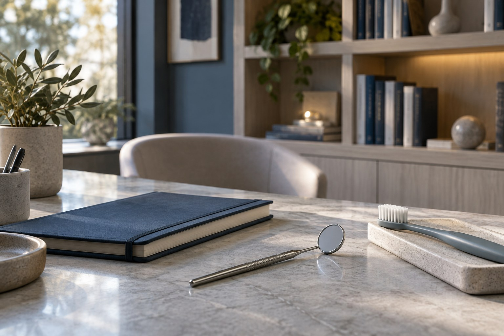

Um caderno para o seu cuidado
Entender abre
bons caminhos.
Informação para conhecer as possibilidades, organizar suas perguntas e começar uma conversa com mais clareza.
Conheça a primeira visitaEncontre no caderno
O que você quer entender?
Comece por um destes assuntos.
Caderno de cuidados.
Para ler, conhecer e levar suas perguntas ao encontro.
Conheça a Acervo
Há espaço para escutar
e tempo para explicar.
Cada pessoa chega com uma história. Conhecer suas dúvidas faz parte do encontro, assim como explicar as etapas e as condições antes de decidir.
A clínicaO que acontece no primeiro encontro?
A proposta demonstrada começa com uma conversa sobre o que você procura, seguida da avaliação e da explicação dos próximos passos. O protocolo real deve ser confirmado com a clínica.
Continuar neste assuntoPreciso saber qual cuidado procurar?
Você pode começar descrevendo sua dúvida. A avaliação profissional ajuda a organizar as possibilidades; não é necessário escolher um tratamento pelo site.
Continuar neste assuntoComo confirmar valores e condições?
A equipe da clínica deverá informar valores, formas de pagamento e condições antes da contratação. Este catálogo não apresenta preços fictícios.
Continuar neste assunto